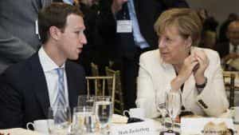

< < < Back
The European Union Partners With Facebook, Google, And Twitter To Censor “Hate Speech” – Return Of Kings
The EU recently made an Orwellian announcement: it is moving to institute policies of censorship to “protect” free speech online. This is a thinly veiled first volley in curbing all freedom of expression on the internet, and forcing leftist political correctness on dissidents. Any post deemed by the European Commission and IT companies “racist” or “xenophobic” could be censored under the proposal. Spokesmouth Vĕra Jourová, the Commissioner for Justice, Consumers, and Gender Equality said:
I welcome the commitment of worldwide IT companies to review the majority of valid notifications for removal of illegal hate speech in less than 24 hours and remove or disable access to such content, if necessary.
The official EU statement says the move comes as part of a bureaucratic junta held in late 2015 which made plans to start enforcing “tolerance and respect” online and claims to be aimed at “preventing and combating Antisemitic and anti-Muslim hatred in Europe.”
These men have never trivialized rape
However, contradicting herself in the same press release, and using the Trojan Horse excuse of protecting the public from terrorism, which in some circles seems to be orchestrated or encouraged by Western governments rather than prevented by it, Jourová says:
The recent terror attacks have reminded us of the urgent need to address illegal online hate speech. Social media is unfortunately one of the tools that terrorist groups use to radicalize young people and racist use to spread violence and hatred. This agreement is an important step forward to ensure that the internet remains a place of free and democratic expression.
In stark contrast to rosy and misleading PR flack spin, the move will cripple online speech among traditional European populations who have anything critical to stay about open door immigration policy for Muslims or about the ongoing epidemics of rape and violence by “immigrants.” The fact Jourová, who is also responsible for “gender equality” put out the statement hints that manosphere sites like Return Of Kings could soon be under fire because they do not follow the narratives of female superiority. Facebook, Twitter, Microsoft, Google and other major tech companies all said they would be complicit in the curbing on free speech online.
It should be pointed out protections for free speech were not instituted to protect polite speech, as polite speech needs no protection. In fact, the First Amendment to the U.S. Constitution was written to protect offensive speech. Debate.org statistics currently show the majority of the public understands this concept, as 70% say “hate speech” should be protected. Some of the more astute commentators pointed out the end of freedom begins with censorship of politically correct, hot-button issues then progresses to the banning of books and other authoritarian moves.
Moreover, who is to determine which types of speech quality as racist or xenophobic? The status quo in Europe and America allows people to say anything critical of whites, but it is verboten for whites to criticize “protected” classes no matter how valid those criticisms may be. Protected classes include any group that is not Caucasian, Christian, male, or heterosexual.

Merkel has already warned Zuckerberg: She does not like criticism of her policies from the rabble (us)
Free Speech Is Under Attack
The move by the EU will create yet another bureaucratic boondoggle and cover online speech in red tape. It will require speech determined by censors to be violating vague policies to be removed within 24 hours. The aims will also be directed towards:
…promoting independent counter-narratives, new ideas and initiatives, and supporting educational programs that encourage critical thinking.
In other words, bureaucrats are hinting they will force “controversial” sites to offer alternative views those in the government find acceptable. Benjamin Jones of the The National Secular Society (UK) said the proposals will threaten criticisms of religion and other important functions of free speech online:
Far from tackling online ‘cyber jihad,’ the agreement risks having the exact opposite effect and entrapping any critical discussion of religion under vague ‘hate speech’ rules. Poorly-trained Facebook or Twitter staff, perhaps with their own ideological bias, could easily see heated criticism of Islam and think it is ‘hate speech,’ particularly if pages or users are targeted and mass reported by Islamists.
Other groups, including the Index on Censorship (UK) have warned the laws will give tech corporations carte blanche to determine what qualifies as hate speech and what does not, rather than forcing them to adhere to established law:
Hate speech laws are already too broad and ambiguous in much of Europe. This agreement fails to properly define what ‘illegal hate speech’ is and does not provide sufficient safeguards for freedom of expression. It devolves power once again to unelected corporations to determine what amounts to hate speech and police it — a move that is guaranteed to stifle free speech in the mistaken belief this will make us all safer. It won’t. It will simply drive unpalatable ideas and opinions underground where they are harder to police — or to challenge. There have been precedents of content removal for unpopular or offensive viewpoints and this agreement risks amplifying the phenomenon of deleting controversial — yet legal — content via misuse or abuse of the notification processes.
Further, just last September Mark Zuckerberg was confronted by German Chancellor Andrea Merkel for not doing enough to combat online discussion of her open-door immigration policy. The interchange came to light only because it was accidentally picked up on a live microphone. Facebook was already cracking down on free speech before the new, tyrannical moves by the Merkel and the EU. Even Muslims who are critical of extremists, such as those who expose corruption in the Palestinian Authority like Khaled Abu Toameh, are being censored by Facebook. After his Facebook account was suspended but later reopened after he protested, he wrote:
It’s still a matter of censorship. They decide what’s acceptable. Now we have to be careful about what we post and what we share. Does this mean we can’t criticize Arab governments anymore?
It seems the European and American governments are hell bent on shutting down discussion on topics that do not fit their agendas. Just as the Soviet Union once punished those who dissented against Communism, the organizing world government is attempting to shut down dissent of multiculturalism and other suicidal far left policies.
The race is on to either stop government censorship or develop a communications alternative to the current internet.
Read Next: Why Do Millennials Oppose Free Speech?